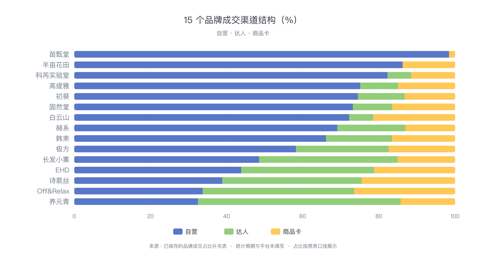

市场与竞品 · 分类观察
洗护市场&竞品看板
罗盘月度分析可切换洗发水、洗发皂、头皮护理和护发精油；其余专题沿用原洗发水样本。不同来源的指数、销量区间与金额分开展示。
最长观察窗口370 天2025.10.01 — 2026.10.05
01 / 历史趋势
公开报告 · 2025—2026市场规模与品牌历史参考
公开市场规模参考 · 2025
2025 年抖音洗发水全年公开销售额；与下方同一报告的品牌格局配套阅读
| 时间与范围 | 公开规模 | 同比 / 环比 | 市场份额 | 口径与来源 |
|---|---|---|---|---|
| 2025 全年 · 抖音洗发水 | 108.99 亿元 | 同比未披露 | 见下方品牌 TOP 20 | 观研天下网页公开表；销售额口径，未说明儿童和退款处理。来源 |
不同范围和销售口径不相加；上述数据均未单独排除儿童。查看口径说明（本地底稿）
2025 抖音洗发水品牌格局
观研天下网页公开销售额 TOP 20，属于全年“洗发水”口径，非成人专项
| 排名 | 品牌 | 销售额 | 报告市占率 | 份额示意 |
|---|
报告网页注明图表仅供参考，具体数据以完整报告为准；此处展示网页披露数值。品牌销售额与份额均有四舍五入误差。
公开市场规模参考 · 2026
2026 年不同范围的公开数值，只用于背景参考
| 时间与范围 | 公开规模 | 同比 / 环比 | 市场份额 | 口径与来源 |
|---|---|---|---|---|
| 2026 上半年 · 抖音洗发护发美发 | 172.6 亿元 | 同比 +31.4% | 未披露洗发水占比 | 青眼情报报告摘要；含洗发水、护发、美发，不能当成洗发水 GMV。来源 |
| 2026 年 7 月 · 抖音洗发护发 | 29.39 亿元 | 环比 +18.9% | 未披露洗发水占比 | 青眼情报按 GMV 统计的初步数据，未审计。来源 |
| 2026 年 8 月 · 抖音洗发护发 | 28.62 亿元 | 较 7 月约 −2.6%按两篇青眼公开数计算 | 未披露洗发水占比 | 青眼情报 8 月数据；与 7 月公开值相除为推算环比。来源 |
| 2026 年 1—8 月 · 淘天＋京东＋抖音洗发水 | 173.14 亿元 | 同比未披露 | 抖音单平台份额未披露 | 青眼情报三平台合计，淘天为退后销售额，京东与抖音为 GMV。来源 |
不同范围和销售口径不相加；上述数据均未单独排除儿童。查看口径说明（本地底稿）
02 / 年度生态
蝉妈妈热度分析 · 近 366 天规模结构与经营方式
成交渠道构成
年度样本 GMV 占比，三个渠道合计 100%
直播是主要成交渠道，商品卡贡献超过两成。渠道占比只适用于该关键词样本。
动销商品价格带
商品数，不是 GMV 或成交价分布
03 / 近一年走势
2025.10—2026.10 · 不同口径分开展示跨年连续观察
近一年新增每日带货活动趋势；GMV 仍不能逐月精确计算
新导出的“洗发”热度趋势覆盖 2025.10.01—2026.10.05 共 370 天，其中 367 天销售额仅显示“1000万+”。因此下方用每日带货商品、视频、直播和品牌数量绘制趋势；这些是活动数量，不是成交额。罗盘 4—9 月仍为另一口径的榜单指数。
查看精确月度成交额模板（公开版不提供下载）近一年“洗发”成交趋势 · 区间
2025 年 10 月—2026 年 9 月，12 个完整自然月
每月销售额下限 · “1000万+”按至少 1000 万计
每月销量区间 · 累加每日展示区间
销售额柱子只表示最低可能值，实际值可能高得多；不能称为月 GMV 或据此算增速。销量上下限为展示区间相加，也非精确销量。2026 年 10 月仅 5 天，未绘入月度图；不能用 2025 全年公开市场规模反推这份不同时间与关键词样本的逐月实付金额。
直播与视频带货活动量 · 逐月
12 个完整自然月；数值为每日导出活动数的月度合计，并非去重视频/直播
2026 年 10 月仅有前 5 天，未绘入月度图。活动数量变化不代表销售额或渠道份额变化。
月度成交额
只对相邻自然月计算环比；同比需要上一年同月。客单价 = 成交额 ÷ 订单数。
04 / 罗盘月度分析
罗盘·策略 · 品牌榜与商品榜洗发水榜单 · 4—9 月
罗盘洗发水导出榜 · 4—9 月
品牌、商品与对应指数集中展示；各月榜单条数以原文件为准
品牌指数走势
选择品牌查看所选月份的金额指数；可按当月名次或相邻一、两个月的指数变动排序
8→9 月金额指数变动 · 9 月前 15 名中的可比较品牌 · 最多显示 10 个
9 月名次 · 前 10 品牌
仅比较同一罗盘导出系列的金额指数；指数变动不是 GMV 增速。品牌未进某月前 30 名时不计算该月相关变动。
产品指数走势
按月份查看商品金额指数变动与对应榜单数据
—跨月按商品 ID 匹配；展示价不是实付均价
8→9 月代表商品金额指数变动 · 点击条形打开商品链接
| 名次 | 商品标题 | 品牌 | 店铺 | 展示价 | 金额指数 | 件数指数 | 上月指数变动 |
|---|
按原 Excel 标题超链接中的商品 ID 匹配相邻月份，且两月各出现一次时计算指数变化。点击上方条形可打开商品链接；类别筛选基于叶子类目，不能替代商品实物核验。
05 / 营销渠道分析
用户补充的品牌成交占比自营、达人与商品卡
15 个品牌成交渠道结构
自营、达人与商品卡占比；按自营占比由高到低排列

自营为主
自营占自营＋达人 ≥60%
达人为主
达人占自营＋达人 ≥60%
自营达人均衡
双方在可归属成交中均低于 60%
商品卡占比最高的品牌
商品卡份额高于该品牌的自营与达人份额；可与上方三组重叠
自营与达人关系只比较这两个可归属部分；商品卡占比单列，不与飞瓜年度销售额区间相加。
06 / 竞品定位解析
用户提供的《竞品拆解.xlsx》核心商品定位版图
核心商品定位版图
切换维度与类别；点击品牌查看商品详情及罗盘 4—9 月品牌金额指数
07 / 竞品营销拆解
用户提供的逐日销售额表 · 2025.10—2026.10十五个品牌的经营走势
品牌月度观察 · 2026 年 4—9 月
默认并排查看六个月；可筛选月份和品牌，每页 5 个
筛选品牌（全部 15 个）
—金额单位：万元 · 来源表逐日主口径的月度合计
名次按当前选择月份的 15 个品牌估算额排列；查看全部月份时按 9 月排序。各月金额来自品牌自身的逐日表，不能解释为成人洗发水市场份额。固然堂比多数品牌早一天，苗甄堂比多数品牌晚一天。
月度走势对比
以 2025 年 11 月各品牌销售额为 100；比较各自变化幅度，最多显示 4 条线
指数仅为同一品牌逐日估算值的月度变化，不是罗盘金额指数，也不是品牌间规模比较。
单品牌月度销售额估算
11 个完整自然月 · 主口径柱状图
逐日变化
同一品牌 365 天主口径，7 日移动平均
08 / 品牌分析
82 个品牌分类表 × 罗盘 4—9 月榜单品牌生态与定位
海外品牌 · 上榜频次前 10
下方显示近一年榜内销量最高档代表商品简称
销量为区间，同档商品无法判定精确高低；Fino 未进近一年商品榜，改用罗盘商品榜中的代表商品，无法做同口径销量比较。
国货品牌 · 上榜频次前 10
老牌与新锐国货；下方显示近一年榜内销量最高档代表商品简称
按罗盘 4—9 月品牌和商品榜行级频次排序；并列时以 9 月品牌榜名次决定先后。频次不是销售额或市场份额；代表商品销量为区间。
“白牌待核”活跃度分层
按 4—9 月出现的月份数；低频不等于没有竞争力
连续 6 个月有 12 个；3—5 个月有 13 个；1—2 个月有 12 个。用户所列“其余 30 个低频”与表格不符。
核对后的结构线索
- 老牌与新锐国货共 29 个；白牌待核 37 个。仅可说明这 82 个样本的品牌数量结构，不说明销售主导权。
- Off&Relax 为珀莱雅旗下品牌；沙宣现归汉高；馥绿德雅归皮尔法伯；Fino 现由 FineToday 经营。
- 娜帕蒂卡、SAZA 的洗发水品牌主体仍待核；不能仅看海外名字或风格判断产地。
- “海外新品没有机会”无法由 6 个月榜单证明，需更长的新品牌进入与销售表现数据。
查看分类核对说明（本地底稿）
09 / 近 30 天样本
蝉妈妈商品榜 · 400 行原始记录功效诉求与销量层级
—成人候选商品
—按标题排除儿童及青少年商品
—可能为洗护套装
标题关键词可以多选，因此各功效数量不能相加为商品总数。功效标签是商品宣称线索，尚未核验备案与实际功效。
功效关键词覆盖
近 30 天成人候选商品标题中的提及数
近 30 天销量区间
只读取原始单元格中的区间部分
区间仅用于分层；表格尾随数字含义不明，没有参与统计。
功效关键词销售额下限排名
近一年“洗发”前 2,000 商品；标题排除儿童词，按商品销售额区间下界排序
同一商品可同时命中多个功效词，金额不可跨功效相加；“1000万+”按至少 1000 万计，排名是销售额下限排名，不代表真实销售额排名。与上方近 30 天提及数属于不同样本。下载明细
10 / 竞品样本
销量区间 · 非精确销量商品样本清单
—品牌按商品标题识别、待复核；同名商品未合并
| 原榜排名 | 商品标题 | 品牌（标题识别） | 近 30 天销量 | 功效线索 | 关联达人 | 关联视频 |
|---|
11 / 数据口径
数据口径
来源与限制
- 年度：洗发水热度分析 PDF（原始文件未公开），2025.10.05–2026.10.05，关键词“洗发水”，前 2,000 商品。
- 近一年带货趋势：飞瓜“洗发”热度导出 2025.10.01–2026.10.05，370 个连续自然日。367 天销售额封顶为“1000万+”，不可计算精确月 GMV；展示销售额下限、销量区间及每日活动数的逐月合计。
- 近一年带货商品：飞瓜“洗发”带货商品前 2,000 行，销售额及各渠道金额均为区间；功效词销售额下限仅依据榜内商品，标题排除儿童词。商品列表不是成人洗发水全量。
- 品牌分类：用户提供 82 个品牌分类表，已与罗盘 4—9 月品牌和商品榜核对出现次数及月份；原表白牌为观察标签，未逐一验证商标及经营主体，故在品牌分析中标“白牌待核”。
- 近 30 天：销量明细 Excel（原始文件未公开），400 行；文件未写明精确起止日期。儿童与青少年排除依靠标题关键词，可能漏判。
- 罗盘 Excel：用户提供 4—9 月品牌榜、商品榜各 6 份；每月品牌前 30、商品前 80。文件名只有月份，年份按资料上下文推定为 2026；工作簿未附筛选页面，商品标题单元格含原商品链接。商品榜大多是洗发水叶子类目，个别为相邻类目。
- 核心竞品逐日表：用户提供 15 个品牌的 365 天逐日销售额估算/合计文件；10 份 Excel、5 份 CSV。主口径单位万元；固然堂为洗发水线，其余品牌的商品覆盖范围未统一说明。月度比较仅用 2025 年 11 月至 2026 年 9 月完整自然月；此表不能证明成人洗发水全市场 GMV 或品牌份额。
- 竞品定位解析：用户提供《竞品拆解.xlsx》Sheet1 第 2—17 行，16 条商品记录、15 个品牌。仅合并“东方植萃养发”两种写法用于图表分组；商品卖点、背书、数据报告和直播话术为原表记录，未作独立验证。原始工作簿保存在本地 source 目录，不随分享页面公开。
- 缺口：暂无可核实的成人洗发水全市场 GMV、同比/环比增长、商品实付均价和客单价。不同来源或口径的数据不相加。